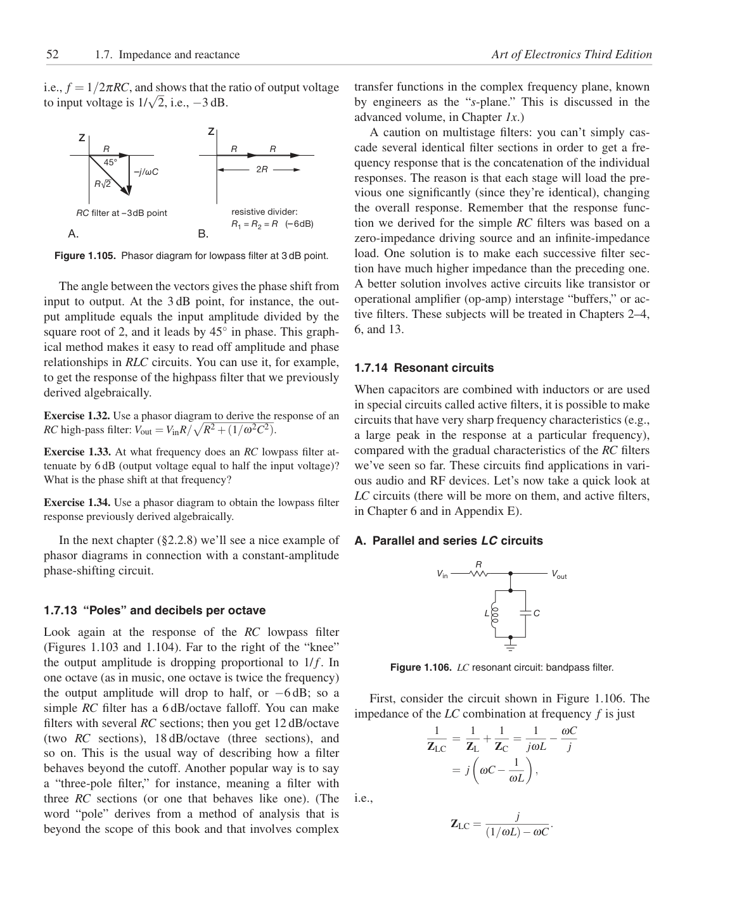

<!doctype html>
<html lang="en"><head><meta charset="utf-8"><meta name="viewport" content="width=device-width,initial-scale=1">
<title>Page 52 of 70</title><meta name="source-page" content="52"><link rel="stylesheet" href="../styles.css">
<link rel="prev" href="page-051.html"><link rel="next" href="page-053.html"></head><body>
<header><div><a class="back" href="../index.html">All pages</a> <span class="meta">Source page 52 / 70</span></div>
<nav class="nav" aria-label="Page navigation"><a href="page-051.html">Previous</a><a href="page-053.html">Next</a></nav></header>
<main><h1 class="meta">Page 52</h1><figure class="sheet"></figure>
<details class="transcript" open><summary>Fetchable text — page 52</summary><div class="text"><p>52
1.7. Impedance and reactance
Art of Electronics Third Edition</p><p>√</p><p>i.e., f = 1/2πRC, and shows that the ratio of output voltage
to input voltage is 1/</p><p>2, i.e., −3 dB.</p><p>transfer functions in the complex frequency plane, known
by engineers as the “s-plane.” This is discussed in the
advanced volume, in Chapter 1x.)</p><p>Z</p><p>Z</p><p>R</p><p>R
R</p><p>2R</p><p>–j/ωC
45°</p><p>R√2</p><p>RC filter at –3dB point</p><p>resistive divider:
R1 = R2 = R (–6dB)</p><p>B.
A.</p><p>Figure 1.105. Phasor diagram for lowpass filter at 3 dB point.</p><p>A caution on multistage filters: you can’t simply cascade several identical filter sections in order to get a frequency response that is the concatenation of the individual
responses. The reason is that each stage will load the previous one significantly (since they’re identical), changing
the overall response. Remember that the response function we derived for the simple RC filters was based on a
zero-impedance driving source and an infinite-impedance
load. One solution is to make each successive filter section have much higher impedance than the preceding one.
A better solution involves active circuits like transistor or
operational amplifier (op-amp) interstage “buffers,” or active filters. These subjects will be treated in Chapters 2–4,
6, and 13.</p><p>1.7.14 Resonant circuits</p><p>The angle between the vectors gives the phase shift from
input to output. At the 3 dB point, for instance, the output amplitude equals the input amplitude divided by the
square root of 2, and it leads by 45◦in phase. This graphical method makes it easy to read off amplitude and phase
relationships in RLC circuits. You can use it, for example,
to get the response of the highpass filter that we previously
derived algebraically.</p><p></p><p>R2 +(1/ω2C2).</p><p>Exercise 1.32. Use a phasor diagram to derive the response of an
RC high-pass filter: Vout = VinR/</p><p>Exercise 1.33. At what frequency does an RC lowpass filter attenuate by 6 dB (output voltage equal to half the input voltage)?
What is the phase shift at that frequency?</p><p>When capacitors are combined with inductors or are used
in special circuits called active filters, it is possible to make
circuits that have very sharp frequency characteristics (e.g.,
a large peak in the response at a particular frequency),
compared with the gradual characteristics of the RC filters
we’ve seen so far. These circuits find applications in various audio and RF devices. Let’s now take a quick look at
LC circuits (there will be more on them, and active filters,
in Chapter 6 and in Appendix E).</p><p>Exercise 1.34. Use a phasor diagram to obtain the lowpass filter
response previously derived algebraically.</p><p>A. Parallel and series LC circuits</p><p>R</p><p>In the next chapter (§2.2.8) we’ll see a nice example of
phasor diagrams in connection with a constant-amplitude
phase-shifting circuit.</p><p>Vin
Vout</p><p>1.7.13 “Poles” and decibels per octave</p><p>L
C</p><p>Figure 1.106. LC resonant circuit: bandpass filter.</p><p>First, consider the circuit shown in Figure 1.106. The
impedance of the LC combination at frequency f is just</p><p>+ 1</p><p>=
1
jωL −ωC</p><p>j</p><p>1
ZLC</p><p>=
1
ZL</p><p>ZC</p><p></p><p></p><p>,</p><p>= j</p><p>ωC −1</p><p>ωL</p><p>i.e.,</p><p>Look again at the response of the RC lowpass filter
(Figures 1.103 and 1.104). Far to the right of the “knee”
the output amplitude is dropping proportional to 1/ f. In
one octave (as in music, one octave is twice the frequency)
the output amplitude will drop to half, or −6 dB; so a
simple RC filter has a 6 dB/octave falloff. You can make
filters with several RC sections; then you get 12 dB/octave
(two RC sections), 18 dB/octave (three sections), and
so on. This is the usual way of describing how a filter
behaves beyond the cutoff. Another popular way is to say
a “three-pole filter,” for instance, meaning a filter with
three RC sections (or one that behaves like one). (The
word “pole” derives from a method of analysis that is
beyond the scope of this book and that involves complex</p><p>ZLC =
j
(1/ωL)−ωC .</p></div></details></main>
<footer>Visual layout, figures, tables, equations, footnotes, and original printed page number are preserved in the lossless page image. <a href="../text/page-052.txt">Plain text</a> · <a href="../data/page-052.json">JSON</a></footer>
</body></html>